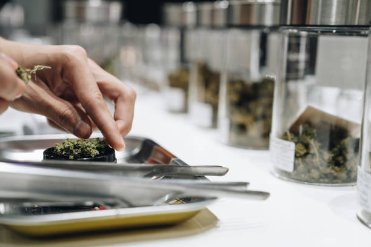

News
Optimal Kratom Dosage Guidelines
Kratom Dosage User Reviews
Effects of Kratom Dosages
About Us
Kratom Reviews and News
What is the recommended dosage of Kratom for beginners?
Jun 09, 2024
Kratom, a natural plant native to Southeast Asia, has gained popularity in recent years for its potential health benefits and mood-enhancing properties.. However, like any substance, it is important to use kratom responsibly and in moderation.
For beginners looking to try kratom for the first time, it is recommended to start with a low dosage.

What is the best Kratom strain for pain relief?
Jun 09, 2024
When it comes to finding the best Kratom strain for pain relief, there are a few factors to consider.. Kratom, a plant native to Southeast Asia, has gained popularity in recent years for its potential medicinal benefits, including pain relief.
What are customers saying in their reviews about different Kratom dosages?
Jun 09, 2024
Customers have varying opinions when it comes to different Kratom dosages.. Some users prefer smaller doses for a more subtle effect, while others opt for larger doses for a stronger experience.
What is the typical duration of effects from a moderate Kratom dose?
Jun 09, 2024
The typical duration of effects from a moderate Kratom dose can vary depending on a variety of factors, including the individual's tolerance level, metabolism, and the specific strain of Kratom being consumed.. In general, however, most users report feeling the effects of Kratom within 15-30 minutes of ingestion.
Once the effects kick in, they typically last for around 4-6 hours.
What are the potential side effects of taking too much Kratom?
Jun 09, 2024
Kratom is a herbal supplement that has gained popularity in recent years for its potential to provide pain relief, boost energy levels, and improve mood.. While many people have reported positive experiences with using Kratom, it is important to be aware of the potential side effects that can occur when taking too much of this substance.
One of the most common side effects of taking too much Kratom is nausea and vomiting.
How to Find the Perfect Kratom Dosage: Expert Recommendations Revealed
Jun 09, 2024
Finding the perfect kratom dosage can be a challenging task for many individuals.. With so many factors to consider, it's important to seek expert recommendations in order to achieve the desired effects without experiencing any negative side effects.
One of the first things to consider when determining your ideal kratom dosage is your tolerance level.
Discover the Best Kratom Dosage for Your Needs with These Proven Tips
Jun 09, 2024
Kratom, a natural herb derived from the leaves of the Mitragyna speciosa tree, has gained popularity in recent years for its potential health benefits.. However, one of the most common questions that users have is how to determine the best dosage for their needs.
Curious About Kratom? Learn the Ideal Dosage and Read Rave Reviews Here
Jun 09, 2024
Are you curious about Kratom and its potential benefits?. If so, you're not alone.
Wondering How Much Kratom to Take? Get Clear Dosage Guidance from Users
Jun 09, 2024
Are you new to using kratom and wondering how much you should take?. You're not alone!
Unlock the Secret to Effective Kratom Use: Dosage Recommendations and Real User Stories
Jun 09, 2024
Kratom, a tropical tree native to Southeast Asia, has gained popularity in recent years for its potential health benefits.. However, many users struggle to find the right dosage and experience the full effects of this natural supplement.
The recommended dosage of Kratom for beginners
Jun 09, 2024
Kratom, a tropical tree native to Southeast Asia, has gained popularity in recent years for its potential health benefits.. However, like any substance, it is important to use caution and follow recommended guidelines when using Kratom.
For beginners, the recommended dosage of Kratom is typically lower than for more experienced users.
How to determine the right dosage of Kratom based on individual factors
Jun 09, 2024
Determining the right dosage of Kratom can be a tricky task, as it depends on a variety of individual factors.. Kratom is a natural herb that has been used for centuries in Southeast Asia for its stimulating and pain-relieving effects.
Reviews of different Kratom strains and their effects at various dosages
Jun 09, 2024
Kratom, a natural substance derived from the leaves of the Mitragyna speciosa tree, has gained popularity in recent years for its potential therapeutic effects.. As more people turn to Kratom as an alternative remedy for various health issues, it is important to understand the different strains available and their effects at different dosages.
When it comes to choosing a Kratom strain, there are several options to consider – each with its own unique properties and benefits.
Tips for safely increasing or decreasing your Kratom dosage
Jun 09, 2024
Kratom is a popular herbal supplement that is used by many people for its potential health benefits.. However, like any substance, it is important to use caution when increasing or decreasing your dosage to ensure your safety and well-being.
When it comes to increasing your Kratom dosage, it is important to do so gradually.
Comparisons of different methods of consuming Kratom and how they impact dosage requirements
Jun 09, 2024
Kratom, a plant native to Southeast Asia, has gained popularity in recent years for its potential therapeutic effects.. However, the way in which Kratom is consumed can greatly impact the dosage required to achieve desired results.
One of the most common methods of consuming Kratom is through traditional oral ingestion.